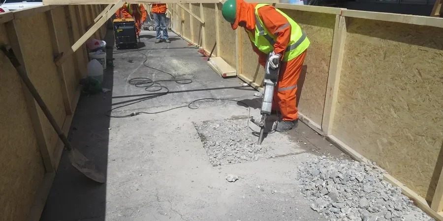

In Arlington, we provide comprehensive geotechnical engineering services tailored to the region’s unique subsurface conditions. From site characterization and foundation design to subsurface investigation and construction monitoring, our local team delivers code-compliant solutions that support safe and efficient development. By combining calibrated laboratory testing with advanced field techniques, we ensure reliable data for every project phase. Whether you're planning a commercial structure, a residential development, or infrastructure improvements, our consolidated regional experience helps you navigate the complexities of Arlington’s geology. Explore how our integrated approach to bearing capacity analysis and unsaturated soil analysis can inform your next project.

Technical reference image — Arlington
Scope of work
Arlington’s subsurface is dominated by the Eagle Ford Shale and Austin Chalk formations, with interbedded marls and limestones that create variable bearing capacities. The Eagle Ford Shale is a dense, fissile clay shale prone to swelling when exposed to moisture, while the Austin Chalk offers more competent rock but can feature solution cavities and fractures. Overlying these bedrock units are terrace deposits of the Trinity River alluvium, consisting of silty clays, sands, and gravels with localized lenses of organic material. The water table in Arlington is typically deep (20–40 feet below grade), but perched conditions can occur in clayey zones after heavy rainfall. Seismic hazards are low, though local faulting in the Balcones Fault Zone can influence bedrock stability. Expansive clay behavior in the Eagle Ford Shale requires careful moisture management and foundation design to mitigate heave and settlement risks. Understanding these layered conditions through targeted residual soil characterization and standard penetration testing is essential for reliable geotechnical recommendations.
Area-specific notes
Our firm brings consolidated regional experience in Arlington’s complex geology, from the expansive Eagle Ford Shale to the variable Austin Chalk. We maintain a calibrated in-house laboratory for index property testing, strength characterization, and swell-consolidation analysis. Our engineers regularly coordinate with local contractors, city planners, and building officials to streamline permitting and construction. By adhering to ASTM standards and IBC requirements, we deliver code-compliant reports that support project approvals. This local focus, combined with rigorous quality control, ensures reliable subsurface evaluations for Arlington’s diverse development projects.
All geotechnical work in Arlington follows U.S. standards, including ASTM D1586 for Standard Penetration Test (SPT) procedures, ASTM D4318 for Atterberg limits, and ASTM D1883 for California Bearing Ratio (CBR) testing. Design codes such as ASCE 7-22 govern seismic loads, while ACI 318 provides foundation concrete requirements. Local building codes adopt the International Building Code (IBC) with Texas-specific amendments. Our reports align with these codes to ensure regulatory compliance and structural safety.
Common questions
What are the most common geotechnical challenges in Arlington?
The primary challenges involve expansive clay behavior in the Eagle Ford Shale, which can cause foundation heave and slab cracking. Variable bedrock conditions in the Austin Chalk, including solution cavities, require careful investigation to avoid unexpected settlement. Additionally, perched water tables in clay-rich zones can complicate excavation and drainage design.
How deep is the water table typically in Arlington?
The regional water table in Arlington generally ranges from 20 to 40 feet below grade, though localized perched conditions can occur at shallower depths in clayey soils after prolonged rainfall. Seasonal fluctuations of 5–10 feet are common, so our investigations include monitoring well installations to capture these variations for foundation and drainage design.
What building codes apply to geotechnical work in Arlington?
Arlington follows the International Building Code (IBC) with Texas-specific amendments, alongside ASTM standards for testing (e.g., ASTM D1586 for SPT, ASTM D4318 for Atterberg limits). ASCE 7-22 is used for seismic load considerations, though Arlington’s seismic hazard is low. Local amendments may address expansive soil mitigation and floodplain management.
Do you provide geotechnical services for residential projects in Arlington?
Yes, we support residential developments with site-specific investigations, including soil borings, laboratory testing for shrink-swell potential, and foundation recommendations. Our reports address slab-on-grade design, drainage, and post-tensioned or deep foundation options where expansive clays or variable bedrock are encountered. We also coordinate with local contractors during construction to verify soil conditions.
Location and service area
We serve projects across Arlington and its metropolitan area.